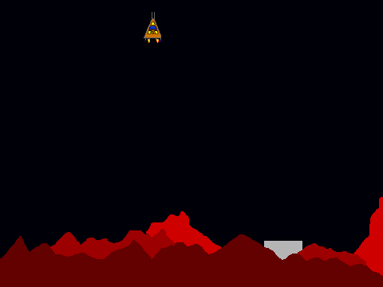
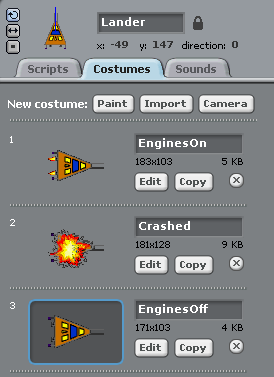
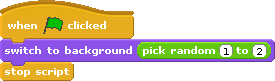
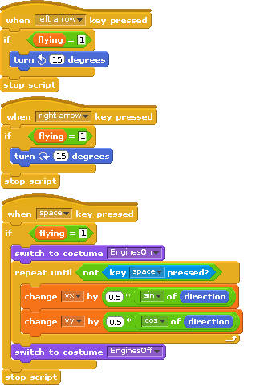
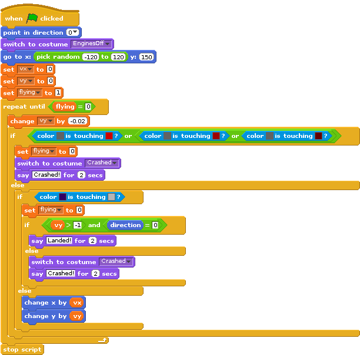

W. H. Bell, The MagPi, Issue 29
Adding natural physics processes to games can make them more real and thrilling to play. In Issue 17, a simple projectile motion game was introduced. The game included gravity and initial velocity. These concepts can be used for other types of games too.
This month's game introduces the simulation of a spaceship landing on a remote planet, where the landing craft obeys the normal laws of physics. In this case, the Lander has rocket motors to change its direction.

The idea of the game is to land the spacecraft on the landing pad. If the spacecraft lands on the surrounding ground, then it will explode. If the spacecraft does not touch down on the landing platform correctly, then it will explode too. The spacecraft must be travelling slowly when it touches down or it will be destroyed.
The Lander sprite has three costumes, to show the Lander with its engines on, when crashed, and when the engines are off. The costume with the engines off was copied and then modified to form the other costumes. The costumes were drawn on their sides, such that an angle of zero degrees corresponds to the spacecraft pointing straight upwards. (More details of the Scratch system of angles are given in Issue 17.)

Two backgrounds were created for the Stage, where the size of the landing pad and the amount of surrounding red rock was chosen to be different. Once the background images had been drawn, the Lander sprite was resized to match landing pad by the right clicking the mouse on the Lander sprite. The colours used for the surrounding ground and the landing pad for the two backgrounds were chosen to be the same, to allow tests based on the colours of the sprite and the background. Then a simple script was written to select a random Stage background when the green flag is pressed.

The Lander is controlled with the left and right arrow keys and the space bar. To prevent the controls from moving the lander when the game is not taking place, a local variable was created called flying. If the flying variable is set to one, then the controls will change the angle of the Lander sprite.
Tapping on the left arrow causes the Lander to turn 15 degrees to the left and tapping on the right arrow causes the lander to turn 15 degrees to the right.
The space bar is used to fire the thrusters, to slow down the Lander and manoeuvre it to the landing pad. When the space bar is pressed, the costume of the Lander changes to the version that shows the engines burning. The costume continues to show the engines burning, while the space bar is pressed. When the space bar is released, the costume changes back to show the engines as being off.
While the space bar is pressed the velocity of the Lander is increased, according to its current direction. The sine and cosine operators are used to calculate the increase of the x and y velocity components using the direction, where the velocity components are stored in local variables vx and vy respectively. The direction is zero, when the Lander points straight upwards, 180 when it points straight downwards, positive when it points to the right and negative when it points to the left.

The Lander requires one more script block, to control the flight of the Lander and to check to see if it has crashed or landed. The script on the left performs this functionality.
When the green flag is pressed, the Lander is reset to point straight upwards, the engines are turned off and its position is chosen at random along the top of the screen. The local variables for the x and y velocity components and the flight status are also reset. The main repeat until loop continues to run until the flying status has been reset to zero. The first step within the loop is to reduce the vertical velocity component by a small amount. This reduction of velocity is present to simulate the effect of gravity on the Lander. The next block within the loop checks to see if the Lander has touched the surrounding ground. If it has touched it, then the costume is changed to the crashed version and the flying status is set to zero. If it has not touched the surrounding ground, then the program checks to see if the landing feet have touched the landing pad or not. If they have touched the landing pad, then the vertical velocity component and the direction of the Lander is checked. If the touch down is not successful, the Lander will be shown as crashed. If the landing is successful, then the Lander will say "Landed!". While the Lander is not in contact with the ground, the position of the Lander is updated using the velocity components. In this program, the speed of the loop regulates how fast time is passing in the simulation.

To make the game harder or easier, try changing the reduction of the vertical velocity in the loop (the effect of gravity) or try changing the effect of the thrusters. The lander could be given a limited amount of fuel, by counting the number of times the space bar is pressed.